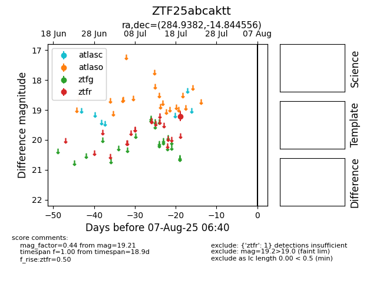

Target ZTF25abcaktt at 2025-08-07 07:30, see:
FINK: fink-portal.org/ZTF25abcaktt
Lasair: lasair-ztf.lsst.ac.uk/objects/ZTF25abcaktt
ALeRCE: alerce.online/object/ZTF25abcaktt
alt names
ZTF25abcaktt (ztf,fink)
coordinates:
equatorial (ra, dec) = (284.9382,-14.84456)
galactic (l, b) = (20.5524,-8.51260)
photometry
last ztfr=19.21
1 ztfr detections
